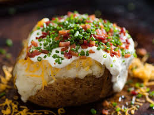

Baked Potato

Baked potatos are simply the best, nothing better even in a stew. Here is a quick guide to make your own.
Directions
First you will need a few items:
- Your spud
- Netural Oil, like canola or vegetable
- Salt
- Toppings, (butter, sour cream, cheese, bacon)
To make the baked potato follow the below steps
- Wash your spud
- Rub your spud in oil
- Lightly coat your spud in salt
- Place your spud in the oven at 375° F for 2 hours
- Once your spud is fork tender all the way through, take it out of the oven
- Cut your spud open and serve. Add as many or as few toppings as you like.
Back